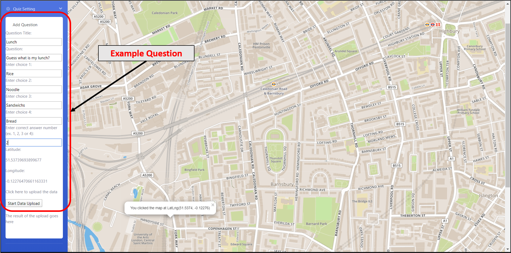
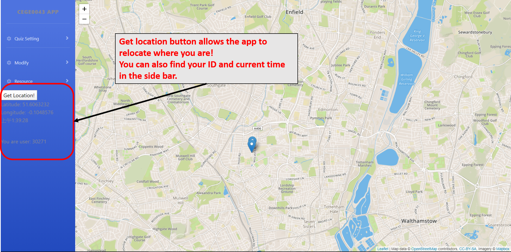

Quiz Setting App Tutorial
1. Welcome! This is the starting page of the question setting app!

2. Explore question setting function on the left hand sidebar.
The question setting function allows you to enter the detail of the question you like. After you are statisfied with the question, click the submit button to upload your question!
Always remember to click on the map first! In order to get the location of the question point.
3. The following image is a example of the question setting
4. The modify tab allows you to view existing question point you've create and also delete the question you don't want by entering question ID.
Click on the load question button to view the existing question point and click remove once you are finished.
Hint: you can find the question ID from the App Statistic page and enter the one you want to delete.
5. The resource page is where you find the help page and also allows you to view the current statistic information about the app.
There are two App statistic you can choose, the first one will load the statistic page in a new tab, the second will load the page here!
App statistic page includes information such as daily participation of users, question setting table etc.
6. The "get location" is where you can relocate your current position. You can also check your user ID and current time in the below content.
7. This is the end of the tutorial. You are welcome to contact me if you have any further question.
Contact: ucessie@ucl.ac.uk